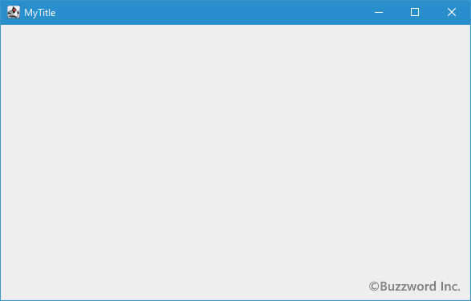

フレームを作成する
フレームを作成するには JFrame クラスを使用します。ここでは JFrame クラスの定義やコンストラクトについて確認し、実際に JFrame クラスのオブジェクトを作成してフレームを表示する方法について解説します。
JFrameクラスの定義
JFrame クラスは次のように定義されています。
java.lang.Object
java.awt.Component
java.awt.Container
java.awt.Window
java.awt.Frame
javax.swing.JFrame
public class JFrame
extends Frame
implements WindowConstants, Accessible, RootPaneContainer
JFrame クラスは Frame クラスのサブクラスです。 Frame クラスは Swing が広く使われる前に利用されていた AWT で使われていたフレームであり、 JFrame クラスは Frame クラスの基本部分を継承しさらに機能を追加したクラスとなっています。
JFrameクラスのコンストラクタ
JFrame クラスをを利用するにはコンストラクタを使って JFrame クラスのオブジェクトを作成します。次のようなコンストラクタが用意されています。
JFrame()
初期状態が不可視である、新しいフレームを構築します。
JFrame(GraphicsConfiguration gc)
画面デバイスの指定されたGraphicsConfigurationと空のタイトルで、Frameを作成します。
JFrame(String title)
指定されたタイトルを使用して、初期状態で可視ではない新しいFrameを作成します。
JFrame(String title, GraphicsConfiguration gc)
指定されたタイトルと、画面デバイスの指定されたGraphicsConfigurationで、JFrameを作成します。
主に使用するのは 1 番目及び 3 番目のコンストラクタです。 1 番目のコンストラクタは非表示のフレームを作成します。
public JFrame()
throws HeadlessException
初期状態が不可視である、新しいフレームを構築します。
このコンストラクタはコンポーネントのローカル・プロパティをJComponent.getDefaultLocaleによって返された値に設定します。
例外:
HeadlessException - GraphicsEnvironment.isHeadless()がtrueを返した場合。
3 番目のコンストラクタは非表示のフレームを作成しますが、引数にフレームのタイトルに表示される文字列を指定します。
public JFrame(String title)
throws HeadlessException
指定されたタイトルを使用して、初期状態で可視ではない新しいFrameを作成します。
このコンストラクタはコンポーネントのローカル・プロパティをJComponent.getDefaultLocaleによって返された値に設定します。
パラメータ:
title - フレームのタイトル
例外:
HeadlessException - GraphicsEnvironment.isHeadless()がtrueを返した場合。
実際の使い方は次のようになります。下記ではタイトルに"MyTitle"と表示されるフレームが作成されます。なおフレームは作成しただけでは非表示となっているので、別途表示する処理が必要となります。
import javax.swing.JFrame;
class Sample{
public static void main(String args[]){
JFrame frame = new JFrame("MyTitle");
}
}
どちらのコンストラクタを使ってフレームを作成した場合でも、デフォルトでは非表示となっていますので明示的に表示にする必要があります。実際の使い方は次のようになります。
フレームを表示する
JFrame クラスからオブジェクトを作成した場合、デフォルトではフレームは非表示となっています。フレームを表示するには JFrame クラスの親クラスである Window クラスで定義されている setVisible メソッドを使います。
public void setVisible(boolean b)
パラメータbの値に応じて、このWindowを表示または非表示にします。
このメソッドでウィンドウを表示する場合、次の条件下ではウィンドウにフォーカスも設定されます。
WindowがisFocusableWindow()メソッドで概説されている要件を満たしている。
WindowのautoRequestFocusプロパティの値がtrueである。
このWindowがフォーカスを取得することが、ネイティブのウィンドウ処理システムで許可されている。
2番目の条件(autoRequestFocusプロパティの値)には例外があります。
ウィンドウがモーダル・ダイアログの場合、このプロパティは考慮されず、現在フォーカスのあるウィンドウがブロックされます。
開発者は、このウィンドウがWINDOW_GAINED_FOCUSまたはWINDOW_ACTIVATEDイベントを受け取るまで、このウィンドウがフォーカスされているか、またはアクティブなウィンドウであると決してみなさないでください。
オーバーライド:
setVisible 、クラス: Component
パラメータ:
b - trueの場合はWindowを表示し、それ以外の場合はWindowを非表示にします。 Windowおよびそのオーナーがまだ表示可能でない場合は、両方とも表示可能にします。 Windowは、可視状態にされる前に検証されます。 Windowがすでに可視状態である場合、Windowは前面に移行します。
falseの場合は、このWindow、そのサブコンポーネント、所有されるすべての子を隠します。 #setVisible(true)を呼び出すと、Windowとそのサブコンポーネントをふたたび可視状態にできます。
引数に true を指定すると対象のフレームが表示されます。 true 以外の値を指定すると対象のフレームが非表示となります。
実際の使い方は次のようになります。フレームを作成したあとで setVisible メソッドを使ってフレームを表示しています。
JFrame frame = new JFrame("MyTitle");
frame.setVisible(true);
フレームのタイトルを設定する
JFrame クラスのオブジェクトを作成したあとでフレームのタイトルを設定するには JFrame クラスの親クラスである Frame クラスで定義されている setTitle メソッドを使います。
public void setTitle(String title)
このフレームのタイトルを、指定された文字列に設定します。
パラメータ:
title - フレームのボーダーに表示されるタイトル。 null値は、空の文字列""として処理されます。
引数にはフレームのタイトルとして表示する文字列を指定します。
実際の使い方は次のようになります。フレームを作成したあとで setTitle メソッドを使ってタイトルを設定しています。
JFrame frame = new JFrame();
frame.setTitle("MyTitle");
frame.setVisible(true);
サンプルプログラム
それでは簡単なサンプルプログラムを作って試してみます。テキストエディタで次のように記述したあと、 JSample1_1.java という名前で保存します。
import javax.swing.JFrame;
class JSample1_1{
public static void main(String args[]){
JFrame frame = new JFrame();
frame.setTitle("MyTitle");
frame.setVisible(true);
}
}
次のようにコンパイルを行います。
javac JSample1_1.java

コンパイルが終わりましたら実行します。
java JSample1_1
次のようなフレームが表示されます。
今回のサンプルではフレームのサイズを指定していないためタイトルのみが表示されておりフレーム部分は見えていません。マウスでフレーム右隅の部分をドラッグして広げるとフレームのサイズを拡大したり縮小したりすることができます。

なおプログラムを終了する場合は、プログラムを実行したコマンドプロンプト上で [Ctrl＋c] で終了して下さい。現時点ではフレームの右上にある「×」ボタンを押してもフレームは閉じますがプログラム自身は終了しないためです。今後のページで「×」ボタンを押すとプログラム自身も終了させる方法を確認します。
-- --
JFrame クラスの定義やコンストラクトについて確認し、実際に JFrame クラスのオブジェクトを作成してフレームを表示する方法について解説しました。
( Written by Tatsuo Ikura )

著者 / TATSUO IKURA
初心者～中級者の方を対象としたプログラミング方法や開発環境の構築の解説を行うサイトの運営を行っています。